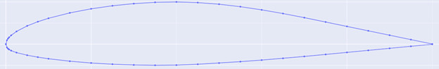
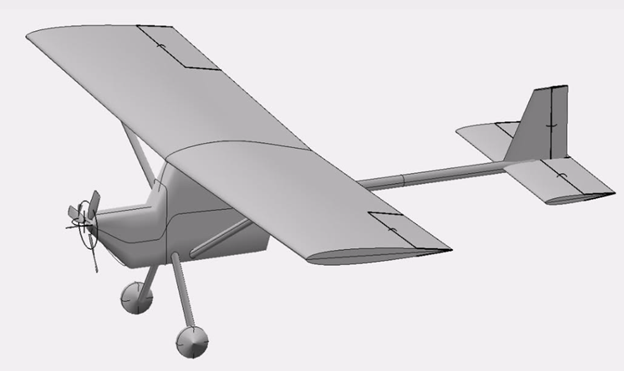
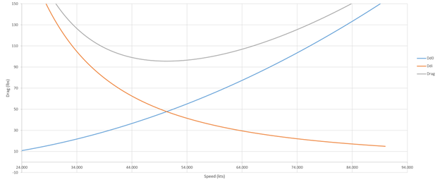

January and February of this year proved to be pretty hectic. My roommate moved out which freed up some space but also sent me down a brief side quest trying to build out a small workshop in the apartment; that coupled with some very aggressive technical milestones at work (Series A needs to hurry itself up) didn’t leave me with a whole lot of Ultralight time. Regardless, I was able to work through much of the sizing problem.
The first real/serious engineering problem I worked on was sizing a liquid rocket engine for my team back in school. That experience gave me a very fond appreciation of the excel sheet/1-D code approach for sizing and I decided to see how far I could take that for this plane design. I should mention that the majority of my process, both the order and technique, was motivated by Dan Raymer's Simplified Aircraft Design for Homebuilders as well as the video series by Ultralight Airplane Workshop which closely follows Dan’s book.
Using my expected flight conditions (the hot and high desert) as well as FAA Part 103 some empirical equations can solve for power loading, wing loading, and then wing geometry. Adding in my weight to the max allowable by 103 gives a first pass estimate at power required.
Typically, at least from what I gather, this is where you would pick an engine. Since most homebuilders either have the engine, they want to use or have limited purchase options, this decision is straightforward and allows you to make it through basic weight and range estimates. However, I’ve decided to make my own electric motor and since the weight of an electric power plant, at least in this application, comes from the batteries and not the motor itself I didn’t feel obligated to size that system out. This also frees up some design room for structures as I can size the pack to come in under the FAA requirements and take whatever hit is necessary to range. This plane is just going to fly “patterns” around the strip making range is a very low design priority.
Early in the design process I decided on a “Hershey bar” style wing, which is just a rectangular wing with no sweep or taper. Given my flight speed and desire for simplicity I think this will continue to trade effectively. It was also around this time that I went through airfoil selection. I traded between five different foils: GA 37A315, Wortmann FX 63-137, NACA 3410, NACA 4415, and Clark Y. I decided to go with the GA 37A315 because of its strong performance in the areas I valued (for reference the GA is designed as an ultralight airfoil so it’s unsurprising that it did so well). The main factors I considered were manufacturability, stall characteristics, and Cm.


I wanted to start drag estimates using OpenVSP. I hadn’t used the software before, and it took a bit to get to a point I was happy with. However, when I tried to run the analysis, it spat our garbage. My suspicion is that the large flat surfaces on my fuselage are modeled in a way that plays very poorly with the meshing. Regardless, I want to sink minimal time into OpenVSP, and I decided to use a different method for drag estimates.
I ended up using three methods: the first was Raymer’s empirical sizing equation from very early in his book, the second was drag buildup method also from Raymer later in his book, and the last was a different buildup method from FAA Advisory Circular 103-7. These buildup methods add different inefficiencies and design features together based on empirical values to obtain a parasitic drag value which summed with a computed induced drag value yields total drag. Some method will then give you a propulsion shaft power requirements while others leave that to you.
Raymer’s first pass method suggested a 29.5hp engine while his more refined and detailed approach suggested between 20-25hp (I used an empirical drag to hp formula here). The FAA’s method yielded a 30hp requirement. The confluences of these three values, all achieved independently, give me confidence in proceeding without computer-based analysis.

My next two major goals are to do sizing for the motor and battery pack as well as a physical build of the airframe using PVC to check size (for apartment build compatibility) as well as human factors. Positive results from there should allow for detailed structures, stability, and weight analysis!
In all honesty, my motivation for this project has been higher in the past. A lot of what I do with the ultralight has huge overlap with my day job. The upside is that I’ve been reading more but the rate of progress has slowed a bit. I’m seeing some light at the end of the tunnel though (I get to work on hardware soon) and remain immensely optimistic about the work to come!